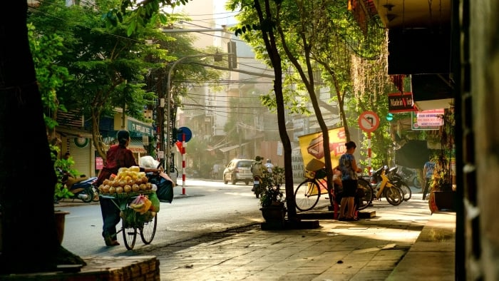
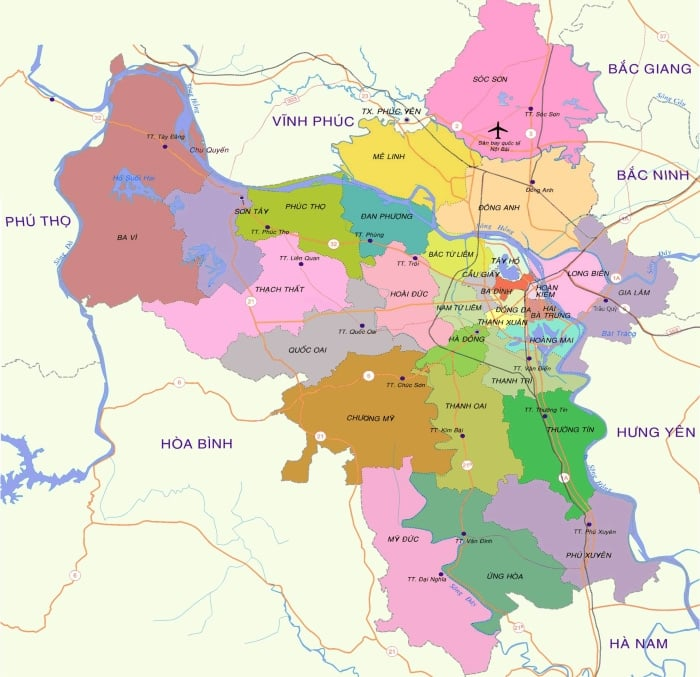
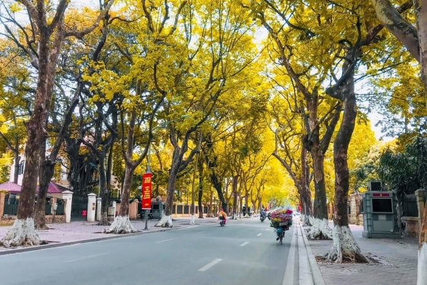
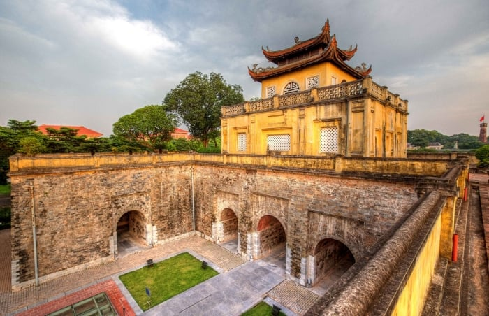
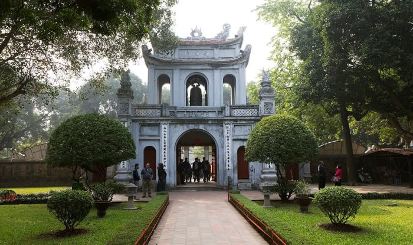
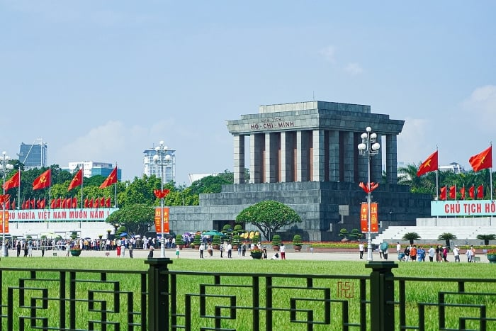
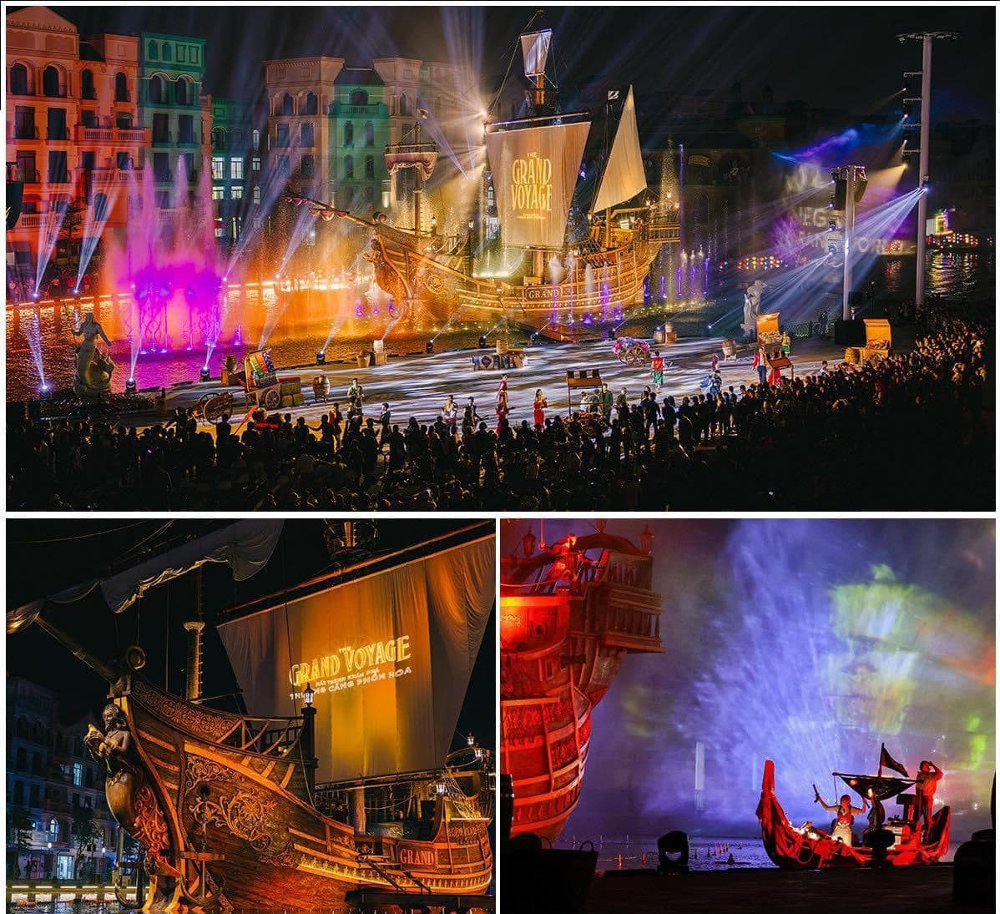
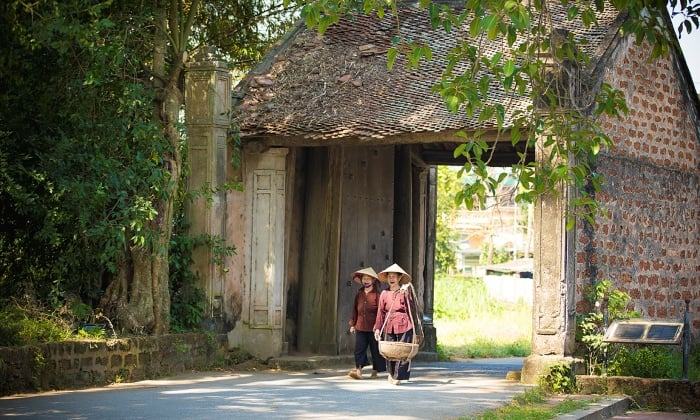
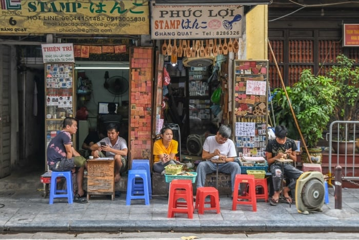

Giới thiệu về Hà Nội
Hà Nội – trung tâm chính trị, văn hóa, giáo dục của Việt Nam, mang trong mình bề dày lịch sử hơn 1000 năm. Được thành lập từ năm 1010, Hà Nội là biểu tượng của sự thịnh vượng và phát triển bền vững qua các thời đại.

Giới thiệu về Hà Nội – Thủ đô ngàn năm văn hiến (Ảnh: Sưu tầm)
Du lịch Hà Nội là một trải nghiệm đầy thú vị và đáng nhớ nếu bạn dành thời gian tìm hiểu những bài viết giới thiệu về Hà Nội. Qua đó, bạn sẽ biết thêm những hoạt động hấp dẫn
như: khám phá các di tích lịch sử của thành phố; check-in tại nhiều điểm đến nổi tiếng hay thưởng thức các món ăn địa phương ngon và đặc sắc.
1. Giới thiệu về Thủ đô Hà Nội
Nếu bạn lần đầu đến với Hà Nội, đừng quên tham khảo những thông tin giới thiệu về Thủ đô Hà Nội bao gồm: Vị trí địa lý, khí hậu, lịch sử, văn hóa và con người để có sự chuẩn
bị tốt nhất cho chuyến đi.
1.1. Vị trí địa lý
Hà Nội là Thủ đô và một trong hai đô thị loại đặc biệt của Việt Nam. Trong các bài viết giới thiệu về Hà Nội, thành phố này có vị trí từ 20°53’ đến 21°23’ vĩ độ Bắc và 105°44’ đến 106°02’ kinh độ Đông, thuộc khu vực trung tâm vùng đồng bằng sông Hồng màu mỡ.
Hà Nội tiếp giáp với các tỉnh Thái Nguyên, Vĩnh Phúc, Hà Nam, Hòa Bình, Bắc Giang, Bắc Ninh, Hưng Yên và Phú Thọ. Bên cạnh diện tích tự nhiên rộng lớn khoảng 3.358,6 km², Hà Nội còn có hệ thống sông ngòi phong phú và đa dạng như sông Hồng, sông Đuống, sông Cầu, sông Đáy và sông Nhuệ.
Nếu tìm hiểu sâu hơn trong những bài giới thiệu chung về Hà Nội, bạn sẽ biết Thủ đô còn được chia thành 30 quận huyện thuộc thành phố, trong đó có 12 quận nội thành và 18 quận huyện ngoại thành. Có thể nói, vị trí địa lý của Hà Nội mang ý nghĩa quan trọng về mặt kinh tế, giao thông, quân sự và chính trị của cả nước.

Bản đồ hành chính của Hà Nội (Ảnh: Sưu tầm)
1.2. Giới thiệu về Hà Nội – Khí hậu
Hà Nội là vùng miền đặc trưng với khí hậu nhiệt đới gió mùa, độ ẩm cao. Do đó, đây cũng là nơi biểu hiện bốn mùa Xuân, Hạ, Thu, Đông rõ rệt nhất trong năm. Để có một chuyến đi trọn vẹn, bạn đừng quên đọc kỹ mục thời tiết và khí hậu trong các bài giới thiệu về Hà Nội.
Mùa hè Hà Nội thường nóng và nhiều mưa, kéo dài từ tháng 5 – tháng 9; mùa đông lạnh buốt và hanh khô, kéo dài từ tháng 11 – tháng 3 năm sau. Hai mùa có thời tiết đẹp và dễ chịu nhất tại thành phố này là mùa xuân và mùa thu vì lúc này khí hậu trở nên khá dễ chịu và mát mẻ.

Mùa thu Hà Nội là mùa đẹp nhất trong năm (Ảnh: Sưu tầm)
1.3. Lịch sử Hà Nội nghìn năm văn hiến
Nhiều người dân Thủ đô luôn tự hào khi giới thiệu về Hà Nội là mảnh đất nghìn năm văn hiến, nơi gắn liền với những giai thoại lịch sử hào hùng của dân tộc Việt Nam. Sở hữu vị trí chiến lược quan trọng, đây cũng từng là từng là kinh đô của hầu hết các triều đại phong kiến xưa như nhà Đinh, nhà Lý, nhà Trần và nhà Lê.
Theo các tư liệu về lịch sử Hà Nội, vào năm 1010 vua Lý Thái Tổ đã chọn Cổ Loa làm kinh đô và đặt tên là Thăng Long, có nghĩa là Rồng bay lên. Từ đó, Thăng Long trở thành biểu tượng cho sự phồn thịnh và vươn lên của đất nước. Trải qua gần 1000 năm, Thăng Long đã có nhiều tên gọi khác nhau như Đông Đô, Đông Kinh, Bắc Thành…đến năm 1831 mới đổi tên là Hà Nội.

Hoàng Thành Thăng Long Hà Nội (Ảnh: Sưu tầm)
Không chỉ chứng kiến nhiều biến cố lịch sử quan trọng của dân tộc như cuộc khởi nghĩa Lam Sơn, cuộc Cách mạng tháng Tám và ngày Quốc khánh 2/9/1945, cuộc kháng chiến chống Mỹ… Hà Nội còn là nơi lưu giữ nhiều di tích lịch sử nổi tiếng như Văn Miếu – Quốc Tử Giám, Chùa Một Cột, Nhà thờ Lớn, Nhà tù Hỏa Lò, Lăng Bác…
Bên cạnh đó, Thủ đô cũng có những con phố nổi tiếng thường được nhắc đến qua lời giới thiệu về phố cổ Hà Nội như: Phố Hàng Mã, phố Hàng Gai, phố Hàng Đào… Những tên gọi dân dã này được đặt theo tên của sản phẩm chính của làng nghề và đã trở thành một phần gắn liền với cuộc sống, sinh hoạt của người dân địa phương nơi đây.
Danh lam thắng cảnh
2. Giới thiệu về danh lam thắng cảnh Hà Nội không thể bỏ qua
Khi nghe giới thiệu về danh lam thắng cảnh Hà Nội, bạn sẽ được biết đến nhiều địa danh nổi tiếng gắn liền với tên tuổi của vùng đất nghìn năm văn hiến. Theo những lời giới thiệu về Hà Nội của người dân địa phương, nơi đây có rất nhiều điểm tham quan độc đáo cả ở trong và ngoài thành phố.
2.1. Những địa điểm du lịch ở trung tâm thành phố
Không cần di chuyển xa xôi để tham quan những địa điểm du lịch Hà Nội nổi tiếng nhất, bạn chỉ cần loanh quanh trong nội thành là đã có thể khám phá vô vàn điểm đến hay ho như:
Phố Cổ Hà Nội: Qua lời kể và lời giới thiệu về Hà Nội, phố cổ chắc chắn là địa danh mà bạn nhất định phải ghé thăm một lần. Ngoài những ngôi nhà mang phong cách xưa, phố cổ còn có những điểm check-in Hà Nội nổi tiếng như Chùa Ngọc Sơn, Nhà Thờ Lớn, Nhà hát Múa rối Thăng Long…
Hồ Hoàn Kiếm: Là biểu tượng cho sự phồn thịnh và vươn lên của đất nước thông qua nhiều lời giới thiệu về Hà Nội. Nguồn gốc của hồ có liên quan đến câu chuyện lịch sử nổi tiếng: vua Lê Lợi trả lại gươm cho thần Kim Quy sau khi đánh giặc Minh.
Văn Miếu Quốc Tử Giám: Là một di tích lịch sử, văn hóa quan trọng bậc nhất của Thủ đô và cả nước, được xây dựng vào năm 1076 dưới thời vua Lý Nhân Tông. Văn Miếu là nơi thờ Khổng Tử và các bậc hiền triết của Nho giáo và cũng là trường đại học đầu tiên của Việt Nam.
Lăng chủ tịch Hồ Chí Minh cũng là một địa danh thường được nhắc đến khi giới thiệu về Hà Nội, đây là nơi yên nghỉ của vị lãnh tụ kính yêu Hồ Chí Minh. Lăng chính là nơi thể hiện lòng biết ơn và tôn kính của nhân dân Việt Nam đối với Hồ chủ tịch.
Hoàng Thành Thăng Long: Là một di tích lịch sử, văn hóa cấp quốc gia, được UNESCO công nhận là Di sản văn hóa thế giới năm 2010. Thành có diện tích rộng lớn, bao gồm nhiều công trình kiến trúc quan trọng, như Cửa Bắc, Cửa Nam, Đại La Thành, Cung Điện Kính Thiên, Cung Điện Long An…
Hồ Tây: Là địa danh nổi tiếng trong những lời giới thiệu về du lịch Hà Nội của người dân địa phương. Hồ Tây có bờ hồ rộng rãi, thoáng mát, có nhiều cây xanh và hoa lá, thích hợp cho những ai muốn tận hưởng không khí trong lành và thư giãn.
Không cần di chuyển xa xôi để tham quan những địa điểm du lịch Hà Nội nổi tiếng nhất, bạn chỉ cần loanh quanh trong nội thành là đã có thể khám phá vô vàn điểm đến hay ho như:
-
Phố Cổ Hà Nội:
Qua lời kể và lối giới thiệu về Hà Nội, phố cổ chắc chắn là địa danh mà bạn nhất định phải ghé thăm một lần. Ngoài những nhà mang phong cách xưa, phố cổ còn có những điểm check-in Hà Nội nổi tiếng như Chùa Ngọc Sơn, Nhà Thờ Lớn, Nhà hát Múa rối Thăng Long...
-
Hồ Hoàn Kiếm:
Là biểu tượng cho sự phồn thịnh và vươn lên của đất nước thông qua nhiều lời giới thiệu về Hà Nội. Nguồn gốc của hồ có liên quan đến câu chuyện lịch sử nổi tiếng: vua Lê Lợi trả lại gươm cho thần Kim Quy sau khi đánh giặc Minh.
-
Văn Miếu Quốc Tử Giám:
Là một di tích lịch sử, văn hóa quan trọng bậc nhất của Thủ đô và cả nước, được xây dựng vào năm 1076 dưới thời vua Lý Nhân Tông. Văn Miếu là nơi thờ Khổng Tử và các bậc hiền triết của Nho giáo và cũng là trường đại học đầu tiên của Việt Nam.
-
Lăng Chủ Tịch Hồ Chí Minh:
Chắc chắn là một địa danh thường được nhắc đến khi giới thiệu về Hà Nội, đây là nơi yên nghỉ của vị lãnh tụ vĩ đại Hồ Chí Minh. Lăng chính là nơi thể hiện lòng biết ơn và tôn kính của nhân dân Việt Nam đối với Hồ Chủ tịch.
-
Hoàng Thành Thăng Long:
Là một di tích lịch sử, văn hóa cấp quốc gia, được UNESCO công nhận là Di sản văn hóa thế giới năm 2010. Thành cổ có diện tích rộng lớn, bao gồm nhiều công trình kiến trúc quan trọng, như Cửa Bắc, Cửa Nam, Đài La Thành, Cung Điện Long An...
-
Hồ Tây:
Là địa danh nổi tiếng trong những lời giới thiệu về du lịch Hà Nội của người dân địa phương. Hồ Tây có bờ rộng rãi, thơ mộng, có nhiều cây xanh và hoa lá, thích hợp cho những ai muốn tận hưởng không khí trong lành và thư giãn.

Văn Miếu Quốc Tử Giám – ngôi trường đại học đầu tiên tại Việt Nam (Ảnh: Sưu tầm)

Trong những bài viết giới thiệu về Hà Nội không chỉ có những địa danh độc đáo kể trên mà còn rất nhiều điểm vui chơi hấp dẫn, chẳng hạn như Grand World, VinKE & Vinpearl Aquarium Times City…
Grand World là khu Siêu quần thể Ẩm thực – Vui chơi giải trí – Mua sắm cực thu hút thuộc Vinhomes Ocean Park 3. Nếu bạn sinh sống hoặc có dịp ghé thăm Hà Nội, đừng bỏ qua thiên đường vui chơi – giải trí với vô vàn các hoạt động biểu diễn đường phố sôi động xuyên ngày đêm này.
Grand World là mảnh ghép giải trí – văn hóa hoàn hảo của Thủ đô, với 2 phân khu K-Town và Venice tọa lạc tại tâm điểm Ocean City – “Phố Đông” sôi động mới. Grand World khiến du khách choáng ngợp bởi những trải nghiệm hấp dẫn chưa từng có tại miền Bắc. Những hoạt động văn hóa đặc sắc, cảnh quan tráng lệ, hay vở diễn thực cảnh kết hợp công nghệ mapping 3D trên sân khấu thuyền lớn nhất châu Á – The Grand Voyage chắc chắn sẽ khiến bạn thích mê.
Bên cạnh những buổi trình diễn tráng lệ, nguy nga của The Grand Voyage là chuỗi hoạt động vui chơi đẳng cấp tại công viên giải trí thu nhỏ này. Bạn và gia đình có thể cùng nhau tận hưởng các hoạt động lễ hội đường phố suốt 365 ngày như ca nhạc đường phố châu Âu, biểu diễn dàn kèn đồng châu Âu, diễu hành định kỳ, Lễ hội thắp lửa, xiếc đường phố và trải nghiệm trò chơi cảm giác mạnh Skydrop, vui chơi tại vòng đu quay Carousel… Đừng quên ghé thăm hàng trăm cửa hàng ẩm thực, thời trang và tiêu dùng lung linh, tấp nập xuyên ngày đêm.

Lăng chủ tịch Hồ Chí Minh tại quảng trường Ba Đình – Hà Nội (Ảnh: Sưu tầm)
VinKE & Vinpearl Aquarium Times City là thủy cung & khu vui chơi kết hợp giáo dục hướng nghiệp mang đến cho du khách rất nhiều hoạt động thú vị có 1-0-2, trong đó phải kể đến:
-
Thamquan thủy cung Times City rộng lớn lên đến 4000m2 với gần 30.000 sinh vật biển thú vị.
-
Chiêm ngưỡng show diễn nàng tiên cá độc đáo hay các hoạt động cho cá ăn, tìm hiểu về loài rùa...
-
Trải nghiệm mô hình hướng nghiệp kết hợp các trò chơi vận động bổ ích cho bé.
2.2. Những địa điểm du lịch hấp dẫn ở ngoại thành
Ngoại thành Hà Nội có gì chơi và tham quan? Nếu đã nghe qua nhiều lời giới thiệu về Hà Nội nhưng vẫn chưa biết đi đâu thì một số điểm du lịch gần Hà Nội sau sẽ là gợi ý tuyệt vời cho bạn:
-
Làng gốm Bát Tràng:
Là một làng nghề truyền thống lâu đời ở huyện Gia Lâm – Hà Nội, nổi tiếng với các sản phẩm gốm sứ đa dạng và tinh xảo. Đến đây, du khách có thể chiêm ngưỡng các quy trình chế tạo gốm, trải nghiệm làm gốm theo ý thích, và mua sắm các món đồ lưu niệm.
-
Làng cổ Đường Lâm:
Đã có tuổi đời hơn 1200 năm qua lời giới thiệu về Hà Nội của người dân nơi đây. Làng còn được công nhận là di sản văn hóa quốc gia vào năm 2006. Vì vậy, làng vẫn còn lưu giữ nhiều di tích lịch sử, văn hóa và kiến trúc cổ xưa, như: nhà sàn gỗ lim, đình chùa, miếu thờ...
-
Vườn quốc gia Ba Vì:
Một khu vườn có diện tích hơn 10.000ha, bao gồm ba ngọn núi cao nhất là Đỉnh Vua (1296m), Đỉnh Tản Viên (1276m) và Đỉnh Ngọc Hoa (1131m). Vườn Quốc Gia Ba Vì khá đa dạng sinh học với nhiều loài động thực vật quý hiếm.

Làng cổ Đường Lâm – Hà Nội (Ảnh: Sưu tầm)
Văn hóa và con người
1.4. Giới thiệu chung về Hà Nội – Văn hóa và con người
Mỗi khi nghe giới thiệu về Hà Nội, bất cứ ai cũng đều nhớ ngay đến những điều thú vị về văn hóa và con người Thủ đô. Văn hóa Hà Nội rất đa dạng và phong phú, thể hiện qua nghệ thuật truyền thống, âm nhạc, văn học… Những di sản văn hóa như ca trù, hát xẩm, múa rối nước và hát chèo vẫn tồn tại và được truyền lại qua nhiều thế hệ.
Hà Nội cũng là nơi tập trung rất nhiều trường đại học, viện nghiên cứu và các trung tâm văn hóa, thu hút các nhà văn, nghệ sĩ, và nhà hoạt động văn hóa đến từ khắp nơi. Các sự kiện văn hóa, triển lãm, festival… diễn ra thường xuyên, tạo nên một không gian giao lưu văn hóa sôi động và phong phú.

Người Hà Nội luôn gìn giữ những giá trị truyền thống (Ảnh: Sưu tầm)
Thông qua những lời giới thiệu về thành phố Hà Nội, nhiều du khách cũng thêm ấn tượng với con người nơi đây. Họ có nhiều phẩm chất tốt đẹp như: mộc mạc, chính nghĩa, đôn hậu, có lòng yêu nước và tự tôn dân tộc rất cao. Người Hà Nội còn nổi tiếng với tinh thần giữ gìn và phát huy các giá trị văn hóa truyền thống, đồng thời tiếp thu và học hỏi những tinh hoa văn hóa của nhân loại.
Những đặc trưng kể trên thường được nhắc đến trong rất nhiều bài báo hay video giới thiệu về Hà Nội. Tuy nhiên, chỉ khi được tiếp xúc và chiêm ngưỡng trực tiếp bạn mới thêm hiểu và cảm nhận sâu sắc về những vẻ đẹp văn hóa và sự sống động của Thủ đô.